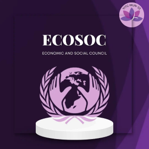
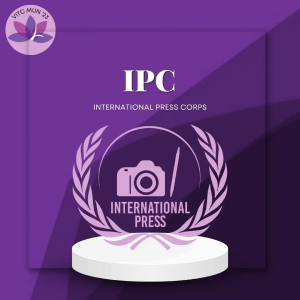

Committees in HMUN India over the years have been simulated on the basis of the most pressing issues of the time. Historical committees are an exciting way of stepping back in time and revisiting revolutionary discussions that took place in the world. In keeping up with that legacy, delegates at HMUN India 2022 will engage in various simulated committees fostering meaningful deliberations over some of the most relevant topics today.

United Nations Security Council
One of the United Nations' five principal organs, the United Nations Security Council (UNSC) is in charge of maintaining world peace and security.This fifteen-member council, including its five permanent members, seeks to address threats to international security and have primary control over all executive actions taken by the United Nations.
United Nations General Assembly Disarmament and International Security Committee
Being the First Committee of the General Assembly, DISEC deals with international disarmament, global challenges and threats to peace that affect the international community and seeks out solutions to the challenges in the international security regime.


Lok Sabha
One of the United Nations' five principal organs, the United Nations Security Council (UNSC) is in charge of maintaining world peace and security.This fifteen-member council, including its five permanent members, seeks to address threats to international security and have primary control over all executive actions taken by the United Nations.
Economic and Social Council
Being the First Committee of the General Assembly, DISEC deals with international disarmament, global challenges and threats to peace that affect the international community and seeks out solutions to the challenges in the international security regime.


United Nations General Assembly Social, Humanitarian & Cultural Committee
One of the United Nations' five principal organs, the United Nations Security Council (UNSC) is in charge of maintaining world peace and security.This fifteen-member council, including its five permanent members, seeks to address threats to international security and have primary control over all executive actions taken by the United Nations.
International Press Corps
Being the First Committee of the General Assembly, DISEC deals with international disarmament, global challenges and threats to peace that affect the international community and seeks out solutions to the challenges in the international security regime.


Trilateral Commission ( Flagship Committee of VITCMUN )
Being the First Committee of the General Assembly, DISEC deals with international disarmament, global challenges and threats to peace that affect the international community and seeks out solutions to the challenges in the international security regime.